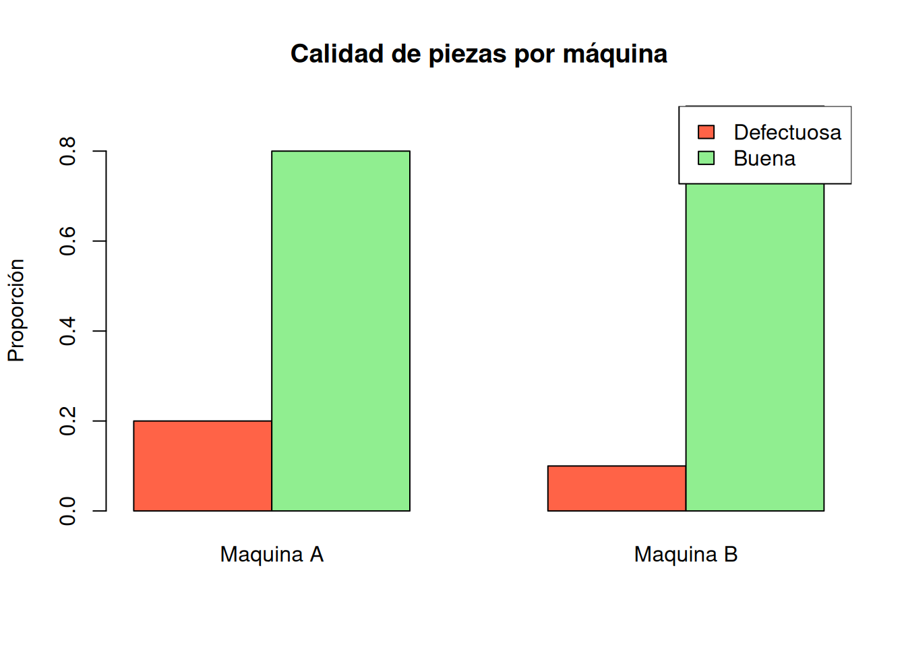
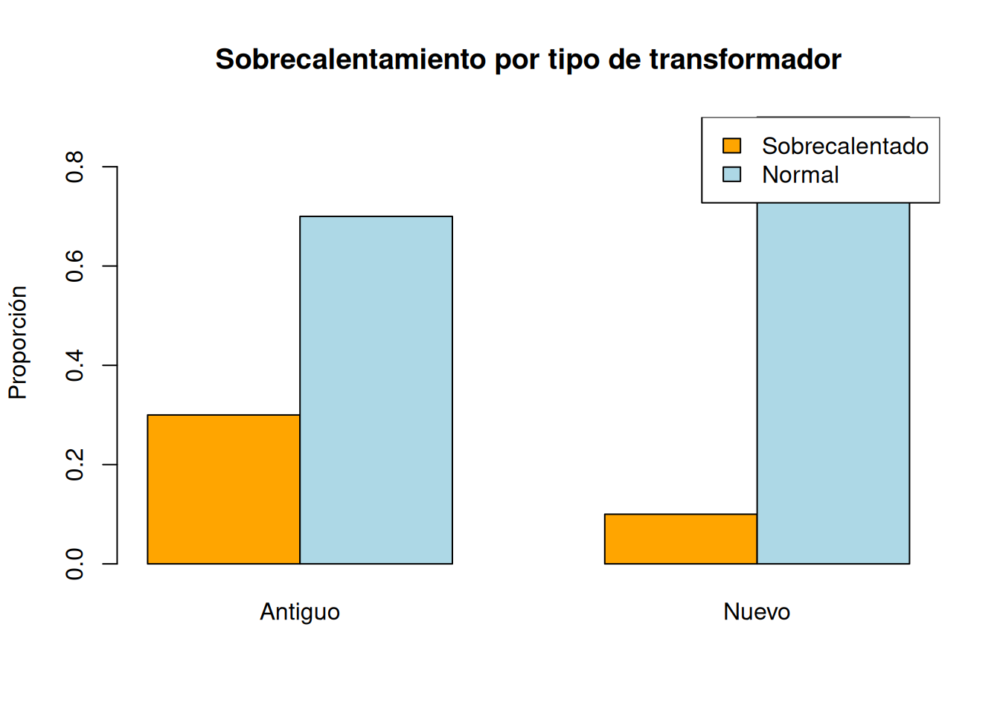

10 Probabilidad condicional
10.1 Motivación ingenieril
En la vida cotidiana no siempre interesa conocer una probabilidad de forma aislada. Muchas veces queremos saber qué tan probable es que ocurra un evento cuando ya conocemos cierta información previa.
Por ejemplo:
- ¿Cuál es la probabilidad de que llueva si el cielo está nublado?
- ¿Cuál es la probabilidad de que un estudiante apruebe si asistió a todas las clases?
- ¿Cuál es la probabilidad de que una pieza sea defectuosa si fue fabricada por una máquina específica?
- ¿Cuál es la probabilidad de que un transformador falle si ya presenta sobrecalentamiento?
- ¿Cuál es la probabilidad de baja generación solar si el día está nublado?
Este tipo de preguntas no se resuelve con probabilidad simple, sino con probabilidad condicional.
En ingeniería, la probabilidad condicional es fundamental porque permite estudiar relaciones entre eventos, analizar riesgos y tomar decisiones técnicas con información parcial.
10.2 Resultados de aprendizaje
Al finalizar esta unidad, el estudiante será capaz de:
- Comprender el concepto de probabilidad condicional.
- Diferenciar probabilidad simple y probabilidad condicional.
- Calcular probabilidades condicionales mediante fórmulas.
- Resolver problemas usando tablas de contingencia.
- Analizar independencia entre eventos.
- Verificar resultados manuales mediante R.
- Aplicar probabilidad condicional a problemas de ingeniería civil, eléctrica, industrial y energías renovables.
10.3 Concepto teórico
La probabilidad condicional mide la probabilidad de que ocurra un evento \(A\), sabiendo que ya ocurrió otro evento \(B\).
Se escribe como:
\[ P(A|B) \]
y se lee:
Probabilidad de \(A\) dado que ocurrió \(B\).
Esto significa que el espacio de análisis ya no es todo el espacio muestral \(S\), sino únicamente la parte donde ocurre \(B\).
10.4 Fórmula de la probabilidad condicional
La probabilidad condicional se define como:
\[ P(A|B)=\frac{P(A\cap B)}{P(B)} \]
siempre que:
\[ P(B)>0 \]
Donde:
- \(P(A|B)\): probabilidad de que ocurra \(A\) dado que ocurrió \(B\).
- \(P(A\cap B)\): probabilidad de que ocurran \(A\) y \(B\) simultáneamente.
- \(P(B)\): probabilidad del evento que ya se sabe que ocurrió.
10.5 Interpretación intuitiva
Suponga que en una clase hay 40 estudiantes. Si se elige un estudiante al azar, el espacio muestral son los 40 estudiantes.
Pero si se dice: “el estudiante elegido usa laptop”, entonces el espacio de análisis se reduce solo al grupo de estudiantes que usan laptop.
Por eso, en una probabilidad condicional el denominador cambia: ya no es el total general, sino el total del evento condicionado.
10.6 Ejemplo cotidiano resuelto 1: estudiantes y dispositivos
En una clase de 40 estudiantes:
- 20 usan laptop.
- 10 usan tablet.
- 8 usan laptop y tablet.
Si se elige un estudiante que usa laptop, ¿cuál es la probabilidad de que también use tablet?
10.7 Solución manual
10.7.1 Paso 1: definir eventos
Evento \(A\): el estudiante usa tablet.
Evento \(B\): el estudiante usa laptop.
Se desea calcular:
\[ P(A|B) \]
10.7.2 Paso 2: identificar los datos
Estudiantes que usan laptop:
\[ n(B)=20 \]
Estudiantes que usan laptop y tablet:
\[ n(A\cap B)=8 \]
10.8 Verificación en R
laptop <- 20
laptop_y_tablet <- 8
p_tablet_dado_laptop <- laptop_y_tablet / laptop
p_tablet_dado_laptop## [1] 0.410.9 Ejemplo cotidiano resuelto 2: clima y lluvia
En 30 días observados:
- 12 días estuvieron nublados.
- 8 días llovió.
- 6 días fueron nublados y lluviosos.
Si un día está nublado, ¿cuál es la probabilidad de que llueva?
10.10 Solución manual
Evento \(A\): llueve.
Evento \(B\): día nublado.
Se desea:
\[ P(A|B) \]
Datos:
\[ n(B)=12 \]
\[ n(A\cap B)=6 \]
Entonces:
\[ P(A|B)=\frac{6}{12} \]
\[ P(A|B)=0.50 \]
Interpretación: si el día está nublado, la probabilidad de que llueva es 50%.
10.11 Verificación en R
dias_nublados <- 12
dias_nublados_y_lluvia <- 6
p_lluvia_dado_nublado <- dias_nublados_y_lluvia / dias_nublados
p_lluvia_dado_nublado## [1] 0.510.12 Tablas de contingencia
Una tabla de contingencia permite organizar la frecuencia conjunta de dos variables categóricas.
Este tipo de tabla es muy útil para calcular probabilidades condicionales.
10.13 Ejemplo aplicado a ingeniería industrial
En una línea de producción se inspeccionan 100 piezas provenientes de dos máquinas.
| Máquina | Defectuosa | Buena | Total |
|---|---|---|---|
| Máquina A | 10 | 40 | 50 |
| Máquina B | 5 | 45 | 50 |
| Total | 15 | 85 | 100 |
Se desea calcular:
- La probabilidad de que una pieza sea defectuosa dado que fue fabricada por la máquina A.
- La probabilidad de que una pieza sea defectuosa dado que fue fabricada por la máquina B.
10.14 Solución manual
10.14.1 Probabilidad de defecto dado Máquina A
Evento \(D\): pieza defectuosa.
Evento \(A\): pieza fabricada por Máquina A.
\[ P(D|A)=\frac{n(D\cap A)}{n(A)} \]
De la tabla:
\[ n(D\cap A)=10 \]
\[ n(A)=50 \]
\[ P(D|A)=\frac{10}{50} \]
\[ P(D|A)=0.20 \]
10.15 Verificación en R
tabla_piezas <- matrix(c(10, 40,
5, 45),
nrow = 2,
byrow = TRUE)
rownames(tabla_piezas) <- c("Maquina A", "Maquina B")
colnames(tabla_piezas) <- c("Defectuosa", "Buena")
tabla_piezas## Defectuosa Buena
## Maquina A 10 40
## Maquina B 5 4510.16 Proporciones por fila
## Defectuosa Buena
## Maquina A 0.2 0.8
## Maquina B 0.1 0.9La opción margin = 1 calcula proporciones dentro de cada fila. En este caso, permite observar la proporción de piezas defectuosas y buenas dentro de cada máquina.
10.17 Gráfica
barplot(t(prop.table(tabla_piezas, margin = 1)),
beside = TRUE,
col = c("tomato", "lightgreen"),
main = "Calidad de piezas por máquina",
ylab = "Proporción")
legend("topright",
legend = c("Defectuosa", "Buena"),
fill = c("tomato", "lightgreen"))
10.18 Regla multiplicativa
A partir de la fórmula de probabilidad condicional:
\[ P(A|B)=\frac{P(A\cap B)}{P(B)} \]
podemos despejar:
\[ P(A\cap B)=P(A|B)P(B) \]
Esta expresión se conoce como regla multiplicativa.
10.19 Ejemplo resuelto 3: falla mecánica y sobrecalentamiento
Suponga que:
- La probabilidad de que un motor presente sobrecalentamiento es \(P(S)=0.30\).
- La probabilidad de que presente falla mecánica dado que tiene sobrecalentamiento es \(P(F|S)=0.40\).
¿Cuál es la probabilidad de que el motor tenga sobrecalentamiento y falla mecánica?
10.20 Solución manual
Se aplica la regla multiplicativa:
\[ P(F\cap S)=P(F|S)P(S) \]
\[ P(F\cap S)=0.40(0.30) \]
\[ P(F\cap S)=0.12 \]
Interpretación: existe una probabilidad del 12% de que el motor presente simultáneamente sobrecalentamiento y falla mecánica.
10.21 Verificación en R
p_sobrecalentamiento <- 0.30
p_falla_dado_sobrecalentamiento <- 0.40
p_ambos <- p_falla_dado_sobrecalentamiento * p_sobrecalentamiento
p_ambos## [1] 0.1210.22 Independencia de eventos
Dos eventos son independientes si la ocurrencia de uno no modifica la probabilidad del otro.
Matemáticamente:
\[ P(A|B)=P(A) \]
También puede verificarse con:
\[ P(A\cap B)=P(A)P(B) \]
10.23 Ejemplo cotidiano de independencia
Se lanza una moneda y un dado.
Evento \(A\): obtener cara.
Evento \(B\): obtener número par en el dado.
El resultado de la moneda no afecta el resultado del dado. Por tanto, los eventos son independientes.
\[ P(A)=\frac{1}{2} \]
\[ P(B)=\frac{3}{6}=\frac{1}{2} \]
\[ P(A\cap B)=P(A)P(B) \]
\[ P(A\cap B)=\frac{1}{2}\cdot\frac{1}{2} \]
\[ P(A\cap B)=\frac{1}{4}=0.25 \]
10.25 Simulación de independencia
Simulamos 1000 lanzamientos de moneda y dado.
set.seed(123)
n <- 1000
moneda <- sample(c("Cara", "Sello"), size = n, replace = TRUE)
dado <- sample(1:6, size = n, replace = TRUE)
evento_cara <- moneda == "Cara"
evento_par <- dado %% 2 == 0
p_cara_sim <- mean(evento_cara)
p_par_sim <- mean(evento_par)
p_cara_y_par_sim <- mean(evento_cara & evento_par)
c(P_cara = p_cara_sim,
P_par = p_par_sim,
P_cara_y_par = p_cara_y_par_sim,
Producto = p_cara_sim * p_par_sim)## P_cara P_par P_cara_y_par Producto
## 0.506000 0.491000 0.250000 0.248446Si el valor de \(P(A\cap B)\) se aproxima a \(P(A)P(B)\), los eventos se comportan aproximadamente como independientes.
10.26 Ejemplo aplicado a ingeniería eléctrica
Se revisan 80 transformadores:
| Tipo | Sobrecalentado | Normal | Total |
|---|---|---|---|
| Antiguo | 12 | 28 | 40 |
| Nuevo | 4 | 36 | 40 |
| Total | 16 | 64 | 80 |
Calcular:
- La probabilidad de sobrecalentamiento dado que el transformador es antiguo.
- La probabilidad de sobrecalentamiento dado que el transformador es nuevo.
- Interpretar cuál grupo presenta mayor riesgo.
10.28 Verificación en R
tabla_transformadores <- matrix(c(12, 28,
4, 36),
nrow = 2,
byrow = TRUE)
rownames(tabla_transformadores) <- c("Antiguo", "Nuevo")
colnames(tabla_transformadores) <- c("Sobrecalentado", "Normal")
tabla_transformadores## Sobrecalentado Normal
## Antiguo 12 28
## Nuevo 4 36## Sobrecalentado Normal
## Antiguo 0.3 0.7
## Nuevo 0.1 0.910.29 Gráfica
barplot(t(prop.table(tabla_transformadores, margin = 1)),
beside = TRUE,
col = c("orange", "lightblue"),
main = "Sobrecalentamiento por tipo de transformador",
ylab = "Proporción")
legend("topright",
legend = c("Sobrecalentado", "Normal"),
fill = c("orange", "lightblue"))
10.30 Ejercicio guiado
En un sistema de generación solar se observan 60 días:
| Clima | Baja generación | Generación normal | Total |
|---|---|---|---|
| Nublado | 18 | 12 | 30 |
| Soleado | 6 | 24 | 30 |
| Total | 24 | 36 | 60 |
Calcular:
- La probabilidad de baja generación dado que el día es nublado.
- La probabilidad de baja generación dado que el día es soleado.
- Comparar los resultados.
- Verificar en R.
10.32 Verificación en R
tabla_solar <- matrix(c(18, 12,
6, 24),
nrow = 2,
byrow = TRUE)
rownames(tabla_solar) <- c("Nublado", "Soleado")
colnames(tabla_solar) <- c("Baja generacion", "Generacion normal")
tabla_solar## Baja generacion Generacion normal
## Nublado 18 12
## Soleado 6 24## Baja generacion Generacion normal
## Nublado 0.6 0.4
## Soleado 0.2 0.810.33 Actividad práctica
Construya una tabla de contingencia en uno de los siguientes contextos:
- Piezas defectuosas por máquina.
- Fallas eléctricas por tipo de transformador.
- Baja resistencia por tipo de mezcla de hormigón.
- Baja generación solar según clima.
- Congestión vehicular según hora del día.
Debe realizar:
- Tabla de contingencia.
- Cálculo manual de al menos dos probabilidades condicionales.
- Verificación en R.
- Gráfico de proporciones.
- Interpretación técnica.
10.34 Aplicaciones por carrera
10.34.1 Ingeniería Civil
Permite calcular la probabilidad de que una muestra no cumpla resistencia mínima dado que pertenece a cierto proveedor, mezcla o lote.
10.34.2 Ingeniería Eléctrica
Permite analizar la probabilidad de falla dado el tipo de equipo, antigüedad, sobrecarga o temperatura.
10.35 Preguntas de autoevaluación
- ¿Qué significa \(P(A|B)\)?
- ¿Cuál es la fórmula de probabilidad condicional?
- ¿Por qué se requiere que \(P(B)>0\)?
- ¿Qué representa \(P(A\cap B)\)?
- ¿Cómo se calcula una probabilidad condicional desde una tabla?
- ¿Qué significa independencia entre eventos?
- ¿Cómo se verifica independencia?
- ¿Qué función de R permite calcular proporciones por fila?
- Dé un ejemplo cotidiano de probabilidad condicional.
- Dé un ejemplo de probabilidad condicional en ingeniería.
10.36 Resumen de la unidad
La probabilidad condicional permite calcular probabilidades cuando se conoce información previa. Su fórmula principal es:
\[ P(A|B)=\frac{P(A\cap B)}{P(B)} \]
Esta herramienta permite estudiar dependencia entre eventos, analizar tablas de contingencia y evaluar riesgos en sistemas reales. Además, permite verificar si dos eventos son independientes.
En ingeniería, la probabilidad condicional es clave para control de calidad, análisis de fallas, diagnóstico de sistemas y evaluación de condiciones operativas.